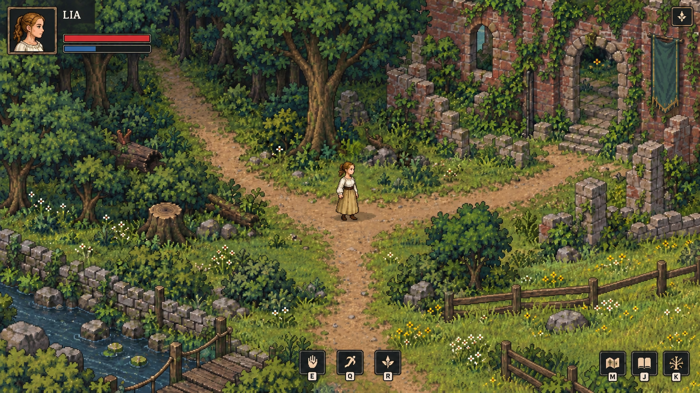
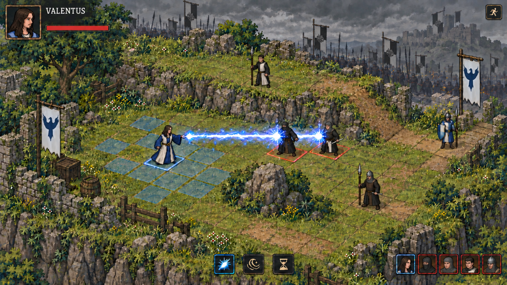

SELANTIS
Lias Reise. Freie Wege, taktische Kämpfe.


Übermächtige Zauber. Den Rückweg öffnen.
Der Weg ist frei. Die Schlacht tobt weiter.
Mondwald, Versorgung, zwei Kinder.
Viele Jahre später. Ihre Reise beginnt.
Das Leben als Waffenknecht
Romanstrophen · Lyria 3.5 · 1:55
Produktionsnachweis
Prompt und HerkunftStory und Quellen
Der Roman hat Vorrang bis zu seinem ausgearbeiteten Ende. Lia heißt im Film Triss. Gesichter, Frisuren und Kleidung folgen deiner Vorgabe nach den Filmen. Die Mythologie ergänzt die Welt; die Filme liefern den späteren Bogen. Der spielbare Schlachtauftakt und die Nebenquests sind Spieladaptionen. Das Kind in der Wiege und die Kraft bleiben zunächst offen.
Alle Transkripte gelesen. Filmhandlungen anhand von Kontaktbögen und Schlüsselbildern geprüft; keine durchgehende Echtzeitwiedergabe. Automatische Transkripte können Fehler enthalten.
Spielregeln und Nebenquests
Die Welt bleibt frei begehbar. Begegnungen wechseln in rundenbasierte Kämpfe mit Bewegung und Aktion. Nebenquests sind optional; der Hauptweg erlaubt Levelaufstiege. Lia lernt eigene Skills, Valentus' Tutorialzauber werden nicht übernommen.
Umsetzung im Browser
Geplant: Phaser mit Tilemaps, getrennten Sprites und Kollisionen. Ein gemeinsamer Stil für freie Bewegung und Rasterkampf. Die Bilder sind Referenzen; Tilesets und Animationen müssen separat gebaut werden.